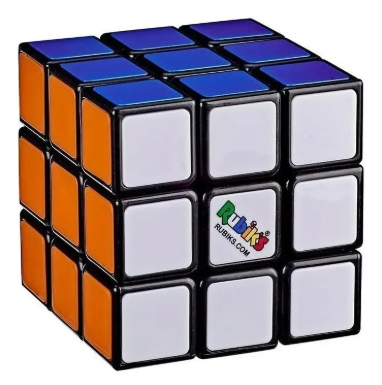
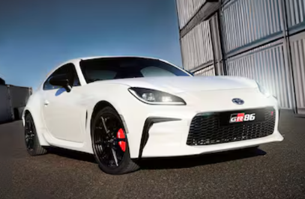

Soy un verdadero fanático de los deportes, especialmente del fútbol, mi gran pasión desde siempre.
Sigo cada partido y disfruto tanto de verlo como de jugarlo.
Además, en mis tiempos libres me gusta practicar pádel, golf y tenis, deportes que me ayudan a mantenerme activo y competitivo.
En cuanto a colores, mi corazón late por Independiente y también por el Arsenal, equipos que sigo con orgullo.

En 2020, en plena pandemia, decidí aprender algo nuevo y me encontré con el desafío del cubo de Rubik.
Al principio parecía imposible, pero con práctica, paciencia y mucha curiosidad, logré resolverlo en menos de 3 minutos.
Desde entonces, se transformó en uno de mis pasatiempos favoritos.
Me encanta porque no solo es entretenido, sino que también me ayuda a entrenar la memoria, mejorar la concentración y encontrar ese momento de calma en medio de la rutina.

Desde que era chico, los autos siempre fueron una de mis grandes pasiones.
Pasaba horas jugando con mis Hot Wheels, y con el tiempo esa afición creció hasta convertirse en una colección de más de 250 autos de distintas escalas.
Me gustan todos los tipos, desde clásicos hasta deportivos, y disfruto siguiendo el automovilismo, especialmente la Fórmula 1.
Manejar por la ruta es otra de esas experiencias que me encanta, combinando la libertad del camino con el placer de estar al volante.